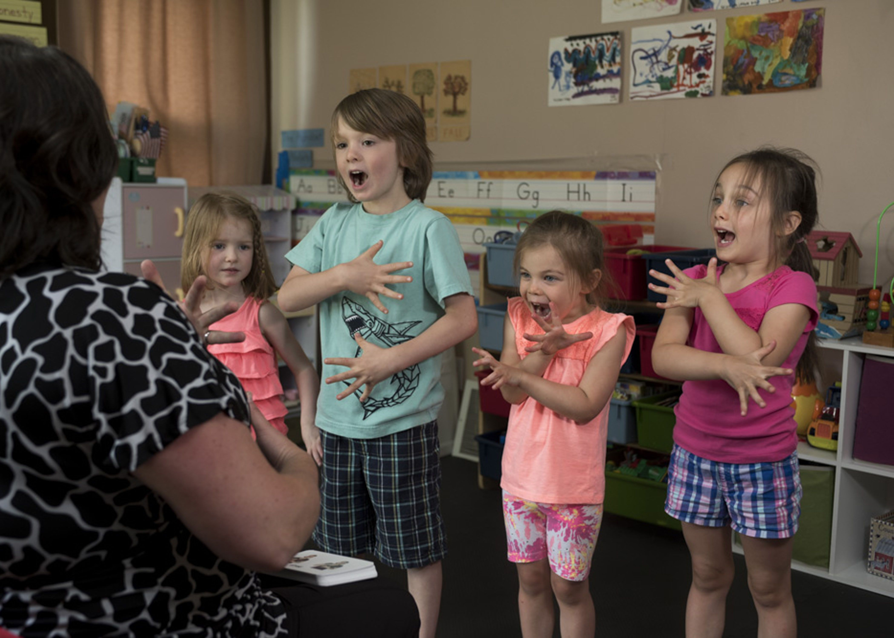
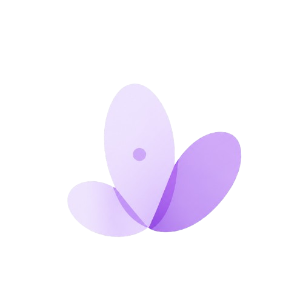

لغة الإشارة ليست مجرد مجموعة من الحركات التي تؤدى باليدين، بل هي لغة متكاملة تحمل في تفاصيلها مشاعر وأفكارًا ومعاني تعبر عن الإنسان وتمنحه وسيلة واضحة للتواصل مع الآخرين. فهي تفتح أبواب الحوار، وتساعد على كسر الحواجز التي قد تقف بين الأشخاص، وتمنح الصم وضعاف السمع فرصة للتعبير عن أنفسهم والمشاركة في الحياة اليومية بصورة أكثر استقلالًا. وفي عالم يزداد فيه التواصل والانشغال والسرعة، تظل القدرة على فهم الآخرين والتواصل معهم أمرًا أساسيًا، لأن التواصل الحقيقي لا يعتمد على الكلمات وحدها، بل على الرغبة في الفهم والاستماع واحترام الاختلاف.
تُعدّ لغة الإشارة واحدة من أهم وسائل التواصل التي تساعد الأشخاص الصم وضعاف السمع على التعبير عن أفكارهم ومشاعرهم واحتياجاتهم، فهي ليست مجرد مجموعة من الحركات التي تؤدى باليدين، وإنما لغة متكاملة تحمل معاني وتعبيرات مختلفة. وتعتمد على مجموعة من العناصر المتداخلة، مثل حركة اليدين وتعبيرات الوجه ووضعية الجسم وسياق الحديث، لتوصيل الفكرة بصورة واضحة ومفهومة. ومن خلال هذه اللغة يستطيع الشخص أن يشارك الآخرين تفاصيل حياته اليومية، وأن يعبر عن رأيه ويطرح أسئلته ويكوّن علاقاته دون أن تكون الكلمات المنطوقة هي الوسيلة الوحيدة للتواصل.
وتظهر أهمية لغة الإشارة بشكل واضح في المواقف اليومية التي نعيشها باستمرار، سواء داخل المنزل أو في المدرسة والجامعة أو في مكان العمل وحتى أثناء التعامل في الأماكن العامة. فوجود أشخاص قادرين على فهم لغة الإشارة واستخدامها يمكن أن يجعل الكثير من المواقف أكثر سهولة، ويمنح الأشخاص الصم وضعاف السمع فرصة أكبر للتعبير والمشاركة باستقلالية. كما أن تعلم الإشارات الأساسية لا يحتاج بالضرورة إلى معرفة متخصصة أو وقت طويل، فقد تكون معرفة الحروف والأرقام وبعض العبارات المستخدمة في الحياة اليومية بداية بسيطة نحو تواصل أفضل. ومع كل إشارة جديدة نتعلمها، نخطو خطوة صغيرة نحو مجتمع يستطيع أفراده فهم بعضهم بعضًا بصورة أكبر، ويصبح الاختلاف في طريقة التواصل أقل قدرة على تشكيل حاجز بينهم.
التواصل الحقيقي لا يعتمد على الكلمات وحدها، بل يبدأ عندما نمنح الآخرين فرصة لأن يُسمَعوا ويُفهَموا.
يمكن أن تظهر الحاجة إلى لغة الإشارة في العديد من المواقف اليومية، مثل الحديث مع أفراد العائلة، أو التواصل داخل المدرسة والجامعة، أو التعامل في أماكن العمل والخدمات العامة. وكلما زاد عدد الأشخاص القادرين على فهمها واستخدامها، أصبح التواصل أكثر سهولة في المواقف التي تجمع بين أشخاص يستخدمون طرقًا مختلفة للتعبير.
كما أن تعلم أساسيات لغة الإشارة لا يعني بالضرورة الوصول إلى مستوى متقدم منذ البداية. يمكن للشخص أن يبدأ بخطوات بسيطة، ثم يطوّر قدرته تدريجيًا من خلال الممارسة والتفاعل واستخدام الإشارات في مواقف حقيقية.
لا تحتاج البداية إلى خطوات معقدة. يمكن البدء بالحروف والأرقام، ثم الانتقال إلى الكلمات والعبارات التي نستخدمها باستمرار في حياتنا اليومية. وبعد ذلك يمكن التدرب على تكوين جمل قصيرة ومحاولة استخدامها في مواقف مختلفة.
والأهم هو الاستمرار في الممارسة وعدم الخوف من الخطأ، لأن تعلم أي لغة يحتاج إلى وقت وتكرار وتفاعل حتى تصبح الإشارات أكثر سهولة وطبيعية.


تعلم لغة الإشارة خطوة بخطوة وطوّر مهاراتك في التواصل.